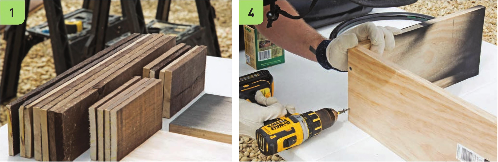

Assemble the Frame There are several ways to make frame assembly easier. Most stores that sell lumber offer to cut lumber to specific dimensions if requested. Request the dimensions listed in the steps below to skip the work of cutting the lumber and reduce the number of tools required. The weathered hardwood is used purely for aesthetics and could be skipped to make assembly easier. 1 Wearing work gloves and eye protection, cut the two 1 x 8" x 8' boards into the following lengths: • One board into four 18" segments and one UW segment • The other board into one \kVi segment and one 19V2M segment 2 Cut the five V2 x 4" x 4' weathered hardwood boards into the following lengths: • Two 1 9V2" segments and one 8V4" segment from each of four 4' boards • Four 8V4" segments from the other 4' board Final lengths and quantities of cut lumber: 4 1 x 8" x 18" boards 2 1 x 8" x I4V2" boards 1 1 x 8" x 19V2" board 8 V2 x 4" x 19V2" weathered hardwood boards 8 V2 x 4" x 8V4" weathered hardwood boards 3 The top rim of the raised bed frame can be painted before or after assembly with chalkboard paint. This is purely an aesthetic addition and this step is not necessary for the functionality of the garden. If painting the rim before assembly, paint the wide edge of two 1 x 8" x 18" boards and the end of both 1 x 8" x I4V2" boards. 4 Making sure the boards are square and level, fasten the end of one 1 x 8" x I4V2" board to the 1 x 8" x I9V2" board using two IV4" screws. The I9V2" board is the base of the frame. HYDROPONIC GROWING SYSTEMS 63
